Bem-vindos à Toca.
Brinquedos de madeira e E-Badges que ensinam a brincar. E um parque inteiro só para a vossa festa, em Moimenta da Beira.
-
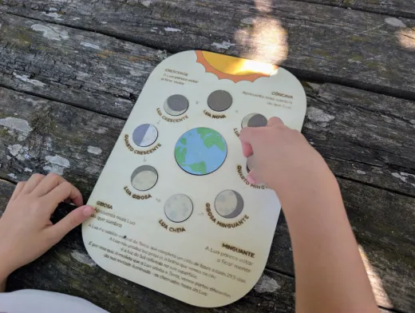
Fases da LuaPuzzle em madeira20,00 € -
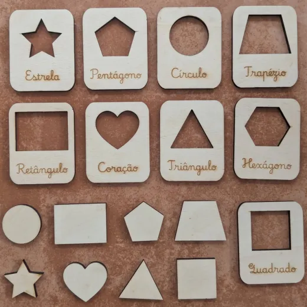
Formas GeométricasQuadro em madeira14,99 € -
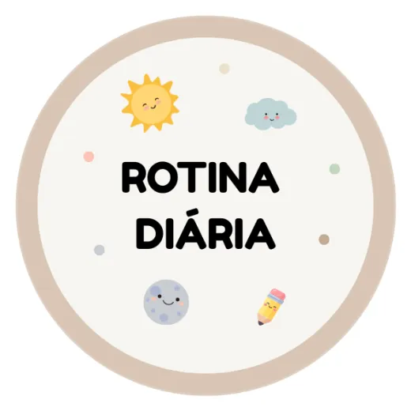
Rotina DiáriaE-Badge · menina29,99 € -
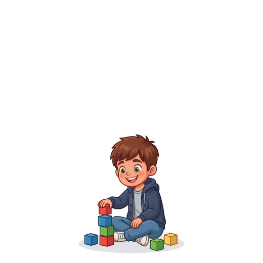
Rotina DiáriaE-Badge · menino29,99 € -
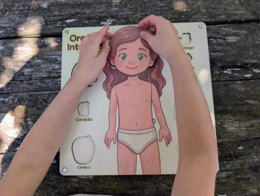
Órgãos InternosPuzzle · menina35,00 € -
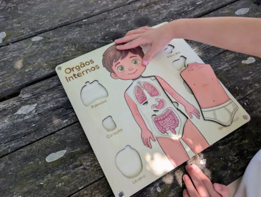
Órgãos InternosPuzzle · menino35,00 €
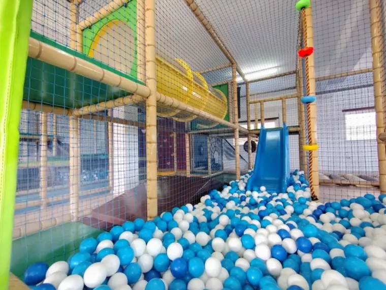
O parque150 € por diareserva por WhatsApp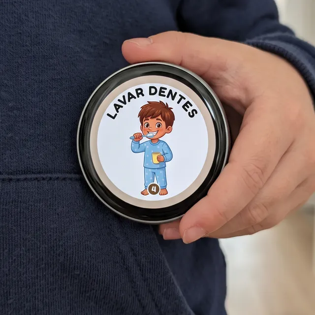
E-Badge: a rotina ao peito.
Um crachá eletrónico com 17 cartões de rotina, do acordar à hora de dormir, e 42 cartões de comunicação (CAA). A criança vê o que vem a seguir e mostra o que sente ou precisa, mesmo quando ainda não o consegue dizer por palavras.
A Toca é toda vossa, o dia inteiro.
150 €o parque só para vocês
das 10h às 22h, por reserva
Cerca de 200 m² de brincadeira para crianças dos 2 aos 12 anos: parede de escalada e rapel, percursos de obstáculos, escorrega, piscina de bolas e trampolins. Para aniversários, encontros de família ou um dia diferente.
- Meias obrigatórias para todos.
- As crianças ficam à guarda dos pais. Não há monitores.
- Comida e bebida ficam por vossa conta.
Reservar por WhatsApp ou ligue 931 372 700
Ao reservar, aceitam os termos e condições de utilização.
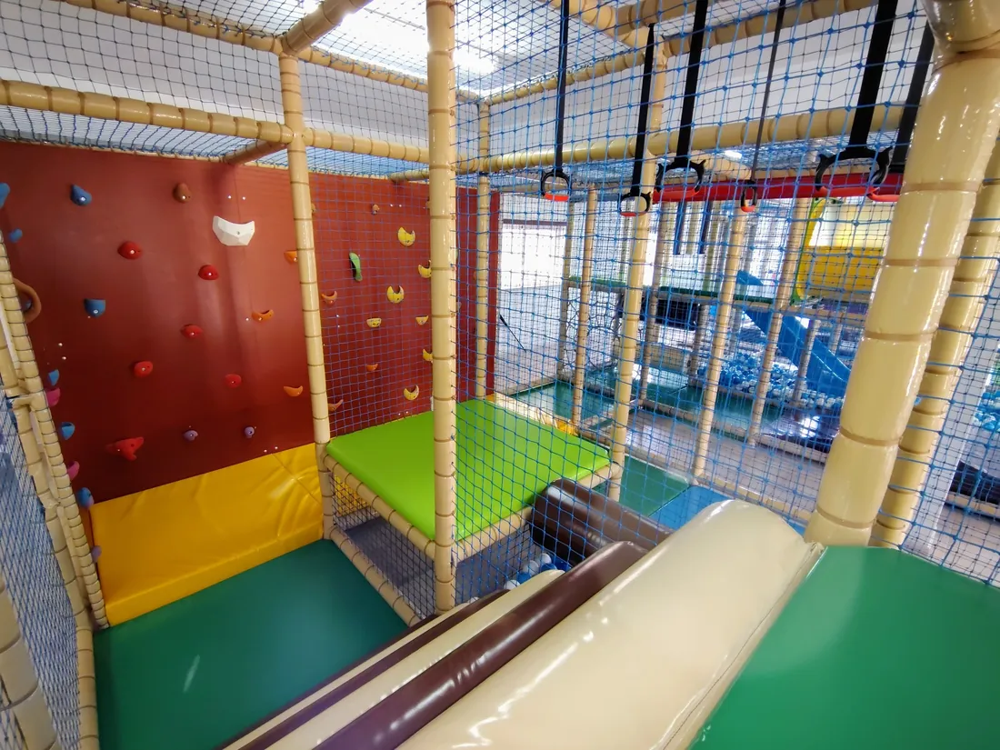
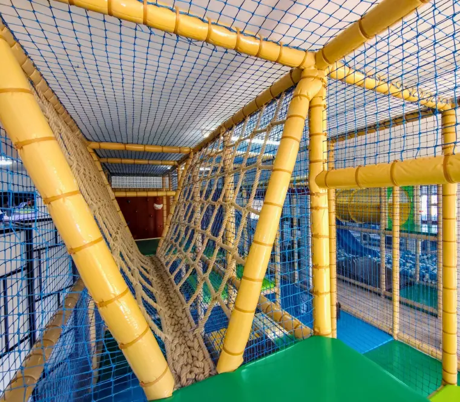
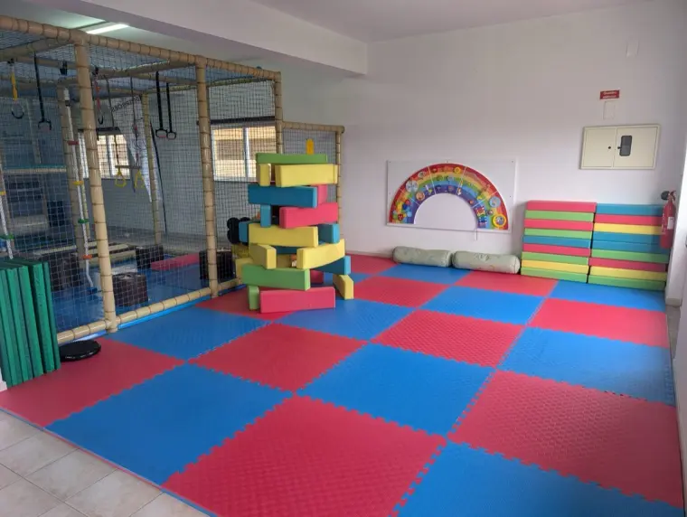
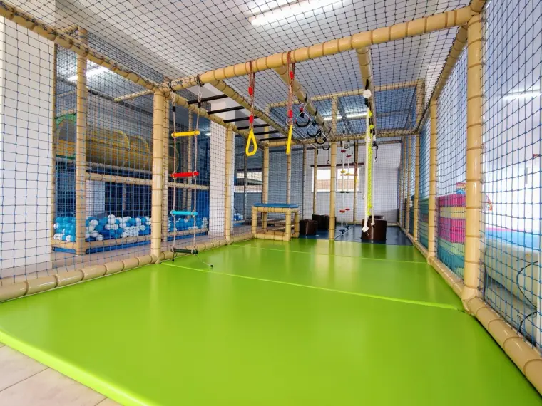
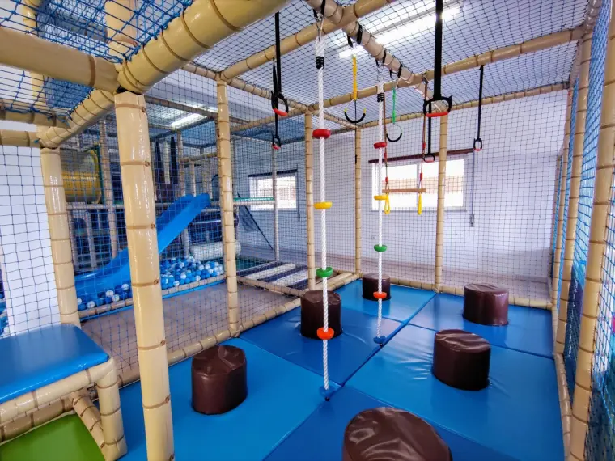
Como chegar
Av. Sá Carneiro, 23, Cave
3620-305 Moimenta da Beira